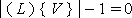

EXPRESS-G diagram
EXPRESS-G diagram| Boucle de points | |
| Vertexschleife - Topologie |
NOTE Definition according to ISO/CD 10303-42:1992
A vertex_loop is a loop of zero genus consisting of a single vertex. A vertex can exist independently of a vertex loop. The topological data shall satisfy the following constraint:
NOTE Entity adapted from vertex_loop defined in ISO 10303-42.
HISTORY New entity in IFC2x2.
Informal Propositions:
XSD Specification:
<xs:element name="IfcVertexLoop" type="ifc:IfcVertexLoop" substitutionGroup="ifc:IfcLoop" nillable="true"/>EXPRESS Specification:
| ENTITY IfcVertexLoop |
| SUBTYPE OF IfcLoop; |
|
| END_ENTITY; |
Attribute Definitions:
| LoopVertex | : | The vertex which defines the entire loop. |
Inheritance Graph:
| ENTITY IfcVertexLoop |
| ENTITY IfcRepresentationItem |
| INVERSE |
|
| ENTITY IfcTopologicalRepresentationItem |
| ENTITY IfcLoop |
| ENTITY IfcVertexLoop |
|
| END_ENTITY; |
 Link to this page
Link to this page